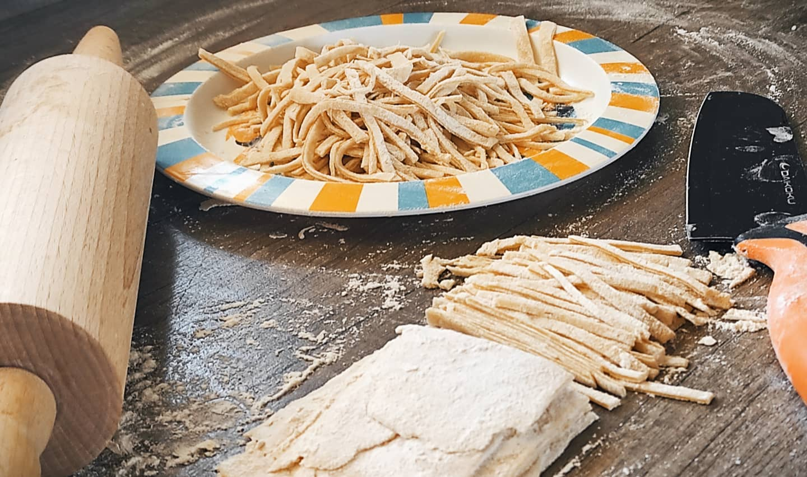

Domáce rezance podľa @veronikasmolickova — Normy Jedál
Vždy som obdivovala moju babku,akou rýchlosťou a presnosťou vie nakrájať túto dobrotu.
Stávala som na stoličke pri nej,keď valkala cesto na pol milimetrovu hrubku po celej ploche. Doteraz to nechápem.
Tak moje sú každý inej hrúbky,šírky,dĺžky... Ale domáce ❤️ najlepšie ♥️
#domaceslize #domacerezance #tradicia #dovyvaru #dovyvarunicine #akoodbabicky